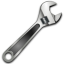
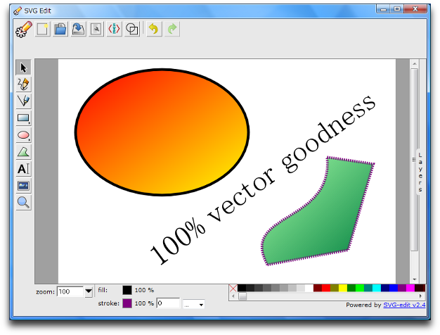

Opera Widgets Style Guide
24th April 2012: Please note
Starting with Opera 12, Opera Widgets will be turned off for new users and completely removed in a later release. If you're interested in building addons for Opera, we recommend going with our extensions platform — check out our extensions documentation to get started.
Introduction
Since their inception, Opera widgets have steadily evolved to become more powerful and easier to create. While their structure and concept is essentially unchanged, there are important differences in the widget runtime of Opera 10.20 and above that developers should be aware of. Here we outline some of the key points to help you make the most of this technology by either developing new widgets or updating existing ones.
Naming your widget
While there are no length restrictions for the name of your widget, it's best to use something short and easy to remember. Widget names may be truncated when displayed in the device's widget manager or operating system's taskbar. A one or two-word title is recommended, ideally between 12-14 characters in total to avoid truncation on mobile devices. For maximum portability, please avoid using the word "Opera" in the title (unless, of course, it relates specifically to the Opera browser or to the musical form of opera).
Widget icons
If you do not provide icons for your widget, the default cogwheel icon will be displayed. To avoid this and help your widget stand from the crowd, we recommend creating your own. Widget icons can appear in a user's dock or desktop, application menu, taskbar, widget manager and on widgets.opera.com so at least four sizes of icon are needed: 128x128, 64x64, 32x32, 16x16. The icons should be listed in this order in your config.xml file to ensure the largest, highest-quality icon is given priority when possible. 256x256 and 512x512 sizes are also supported in desktop environments but should be left out if your widget is just for mobile users. For some guidance in creating widget icons, please see our widget icon tutorial.
Settings
For better usability, we recommend not having a settings screen but rather making any configurable elements editable if possible. If you do intend to use a single settings button, please try not to use the cogwheel icon as it is used as a default for widgets with no icon. There are some good settings icons to choose from in the Open Icon Library, one of which is this spanner icon. Alternatively, if you are combining settings with an information page we suggest this "i" icon.
{kind=link}
{kind=link}
 
Figure 1: These icons from the Oxygen icon set are available under a Creative Commons Attribution-Share Alike license.
Control buttons
And now for some good news! You no longer need to include a close or minimize button or function in your widget. Whether you create a widget in widget mode or application mode, a set of control buttons including close and minimize will be added automatically by the widget runtime or operating system. If you want to include functionality to reduce the size of your widget in addition to minimize, use a button design different to the default minimize icon. In widget mode, you should also be aware of the location of the control buttons if your widget uses transparency and ensure the buttons are displayed close to the widget's visible area. You may disable the control buttons in widget mode and create their equivalent yourself, but be aware that it may not be possible to reproduce their functionality (e.g. minimize) exactly. Disabling the control buttons is done easily in config.xml by adding the following feature element:
<widget>
...
<feature name="http://xmlns.opera.com/wcb" required="false">
<param name="widgetcontrolbuttons" value="false" />
</feature>
...
</widget>
Widget mode and application mode
In general, it's likely that you will find application mode more appropriate for widgets as this makes them resizeable and similar in appearance to native applications. However, there are cases when widget mode is the better choice:
- When the widget is decorative, doesn't take up too much screen space and requires little interaction, for example a clock or calendar.
- When the widget has links that will open in the browser.

Figure 2: The SVG Edit widget, built in application mode.
Widget content
Because of the large number of widgets to choose from, you need to capture the user's attention as soon as they start the widget to prevent them from running away and trying something else. Your main screen should contain interesting content and it should be immediately clear to the user what they have to do. The quicker the user can access the heart of your widget, the more likely they are to continue using it and recommend it to others.
Summary and checklist
For developers short on time, here's a handy stick-it-on-your-fridge checklist for easy widget creation:
- Does your widget have the word "Opera" in its title? If so, remove it, unless it relates to Opera.
- Is your widget icon available in four sizes? If not, create 128x128, 64x64, 32x32 and 16x16 versions.
- Are you using the cogwheel icon for a settings button? If so, choose an alternative design.
- Have you made a close or minimize button? If so, remove them and rely on the default control buttons.
- Does your widget use transparency? If so, ensure the control buttons are close to the visible part of your widget.
- Would you like your widget to look like a native application? If so, add
defaultmode="application"to thewidgetelement ofconfig.xml. - Do users know what to do when they open your widget? If not, make required actions obvious and make content more easily accessible.
- Is your widget decorative or does it open links in the browser? If so, you should create it it widget mode.
These suggestions and guidelines will hopefully make life a little easier for widget developers. On final thing to note is that loading config.xml in Opera does not start Opera Dragonfly automatically and widget debugging should be done using Opera Dragonfly's remote debugging feature. As always, we're very keen to see your new and improved widgets uploaded to widgets.opera.com.
This article is licensed under a Creative Commons Attribution-Noncommercial-Share Alike 3.0 Unported license.
Comments
The forum archive of this article is still available on My Opera.
No new comments accepted.